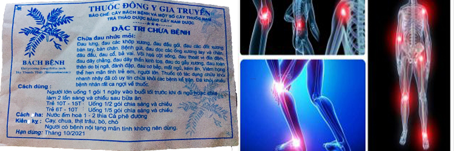

Nguyên Nhân Bị Vôi Hóa Xương Khớp
Ở người trưởng thành, các tế bào sụn không có khả năng sinh sản và tái tạo. Khi con người già đi, cùng với sự lão hóa của cơ thể, các tế bào sụn cũng dần dần giảm chức năng tổng hợp chất tạo nên sợi colagen và mucopolysaccaride, làm cho chất lượng sụn kém dần, nhất là tính đàn hồi. Những người mắc bệnh thoái hóa hóa khớp sẽ liên tục tăng nhanh sau tuổi 30 và tăng mạnh ở tuổi 65.
Các dị dạng bẩm sinh làm thay đổi diện tì nén bình thường của khớp và cột sống làm một số khớp phải chịu áp lực quá tải, lâu dài gây ra thoái hóa.
Người có cơ địa già sớm hoặc hệ thống xương khớp yếu. Nếu như trong gia đình có người bị bệnh thoái hóa khớp sớm thì rất dễ những người con cháu sau này cũng sẽ bị nếu không có chế độ ăn uống, nghỉ ngơi và sinh hoạt hợp lý.
Sau các tổn thương do các bệnh lý xương khớp khác, các chấn thương do tai nạn, nghề nghiệp, loạn sản, làm thay đổi mối tương quan, hình thái của khớp và cột sống…
Do tăng cân quá mức như béo phì, tăng tải trọng do nghề nghiệp…
Thiếu hormon ở nữ chính là một trong những yếu tố gây nên tình trạng thoái hóa khớp. Các rối loạn hormon trong thời kì mãn kinh, đái tháo đường, loãng xương do nội tiết… làm tăng nguy cơ thoái hóa khớp.
Tôi xin giới thiệu Bài Thuốc hiệu quả:
Thuốc Đông Y Gia Truyền Bào Chế Cây Bách Bệnh Và Một Số Cây Thuốc Nam
Đặc Trị Chữa Bệnh Của Thuốc:
- ĐAU LƯNG, ĐAU CÁC KHỚP, ĐẦU GỐI, CÁC ĐỐT XƯƠNG BÀN TAY, BÀN CHÂN, ĐAU ĐẦU,CỔ, BẢ VAI, BỆNH GOUT (GÚT).
- VÔI HÓA CỘT SỐNG, VIÊM XOANG, DÂY CHẰNG, DÂY THẦN KINH TỌA, DO GÃY XƯƠNG, TOÀN THÂN DO BỊ NGÃ, ĐÁNH ĐẬP.
- MẤT NGỦ, KÉM ĂN, VIÊM HỌNG TRẺ EM, NGƯỜI LỚN, ĐAU RĂNG.
* THUỐC CÓ TÁC DỤNG CẮT CƠN ĐAU VÀ CHỮA KHỎI NHANH NHẠY, ĐÃ CÓ UY TÍN CHỮA KHỎI CÁC BỆNH TRÊN. ĐÃ KHỎI NHIỀU BỆNH NHÂN CA NGỢI VỀ THUỐC.
Cách Dùng Gói Thuốc:
- Uống ngày 1 gói chia 2 lần sau bữa ăn
- Cấp tính ngày 2 gói chia 2 lần sau bữa ăn
- Pha với nước ấm hòa thêm 1/2 thìa đường hoặc mật ong
- • Thuốc có tác dụng chữa bệnh nhanh, thường chỉ uống từ 1-3 đợt (mỗi đợt 20 gói) tùy mức độ bệnh. Uống từ 1 -5 gói đã thấy chuyển biến tích cực.
Tác Dụng Phụ:
- Thuốc bào chế từ cây bách bệnh và thảo dược nên rất an toàn cho người sử dụng
- • Thuốc có tác dụng kích thích ăn rất tốt, đặc biệt là khi uống thuốc vào thấy người khỏe khoắn và tỉnh táo hơn nhiều.
- Tuy nhiên khi uống thuốc này người bệnh phải kiêng các loại thức ăn chua, cay, thịt trâu, thịt bò, thịt chó. Những người có bệnh nội tạng mãn tính không nên dùng.
Liên Hệ: 0842501993
FaceBook: https://www.facebook.com/suckhoenguoiviet30
- Giao hàng tận nơi trong địa bàn thành phố Hà Nội.
- Khách hàng các tỉnh xin vui lòng liên hệ để được hướng dẫn mua thuốc thuận tiện.
Địa Chỉ: Khu đô thị HATECO Xuân Phương, Hà Nội
Mobile: 084.250.1993
Website: suckhoechonguoiviet.github.io/trangchu.html
Page: https://www.facebook.com/suckhoenguoiviet30